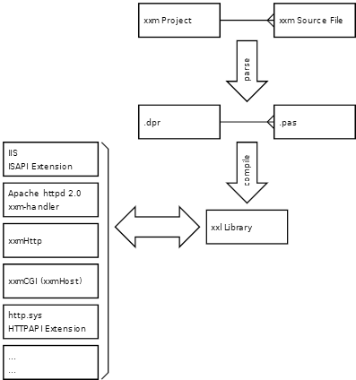

xxm enables you to create dynamic websites in Delphi, combining both Delphi and HTML in the source files. The project is compiled into a module, ready for use by a pluggable protocol handler in Internet Explorer, an add-on for FireFox, an ISAPI Extension, an Apache module, with HTTPAPI, or a stand-alone HTTP server. (Perhaps more in the future or by other parties.)
How does it work?

An xxm project contains source-files that hold both HTML and Object Pascal source code.
These are converted (e.g. by the auto-compile-on-refresh feature) into a plain Delphi project,
which is compiled into a xxm Library (with the .xxl file extension).
This xxm Library can be loaded by one of the xxm handlers:
Most handlers are available in these forms:
name.xxu file, if present requests are stalled until the xxl can get overwritten by the xxu file (great for live environments!)To get started, download the binaries or follow the get started screenshot tutorial.